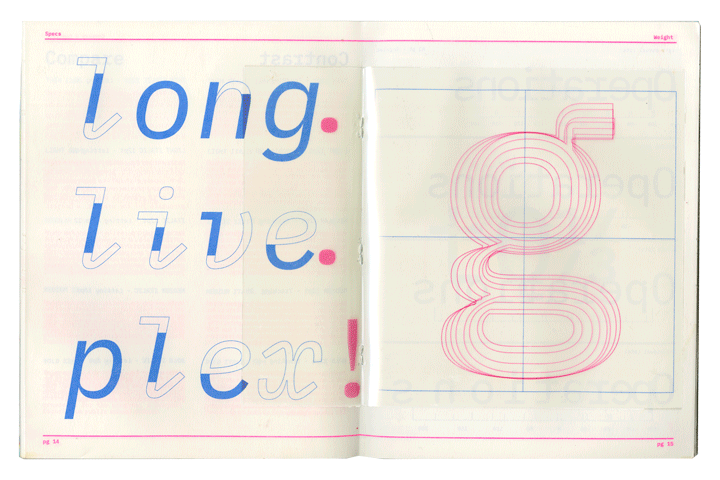
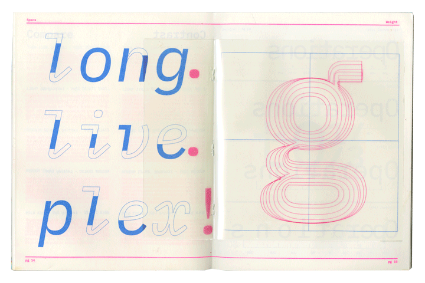

Museum of Moving Parts
There are several ways to go about solving a problem or executing a task. Each part of the whole plays a pivotal role in the total success. Rube Goldberg, a famous comics artist created the concept of a machine in which it is intentionally designed to perform a simple task in an indirect and overcomplicated fashion. The Museum of Moving Parts gives homage to these machines and their attention to a single components role in completing a larger goal.
The Museum’s branding centrals around the the white ‘M’ created out of found parts. Each exhibitor received a part along with the corresponding colors. There are 5 colors to the MMP brand-red, green, yellow, blue, and pink. The colors are bright yet pastel and reminisce of a child’s playroom. The colors can be seen throughout the museum, for example, on the website, the tickets, and the items sold in the store. The typeface is Cinetype by GT chosen for the sharp corners and mechanical-gear-like qualities.
The promotional video utilizes the brand’s colors and plays off of the childish tones of the museum. The instructions show the user how to create a simple moving parts machine and encourages them to buy a ticket to the museum to learn more about how to create these contraptions.
Go in Depth


 
